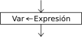

Asignación

La instrucción de asignación permite almacenar una valor en una variable.
<variable > <- <expresión> ;
Al ejecutarse la asignación, primero se evalúa la expresión de la derecha y luego se asigna el resultado a la variable de la izquierda. El tipo de la variable y el de la expresión deben coincidir.
Si la variable de la izquierda no existía previamente a la asignación, se crea. Si la variable existía se pierde su valor anterior y toma el valor nuevo, razón por la cual se dice que la asignación es "destructiva" (destruye el valor que tenía la variable de la izquierda). Los contenidos de las variables que intervienen en la expresión de la derecha no se modifican.
Existen dos operadores de asignación alternativos que pueden utilizarse indistintamente en cualquier caso, pero la habilitación del segundo (=) depende del perfil de lenguaje seleccionado.
<variable> := <expresión> ;
<variable> = <expresión> ;